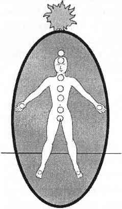

SEKIZINCI ÇAKRA ALTIN GÜNEŞ ÇAKRASI
Sekizinci çakra, auranın dışında ve tepesinde yer alan, altın renkli güneşe benzer enerji merkezidir. Altın güneş çakrası özel yeteneklerin toplandığı bir merkezden çok bir enerji kaynağıdır. Fonksiyonu auranızın içindeki enerjileri ve hayatınızı denetlemektir. Altın güneş tüm gerçeklerinizi denetler bunların içinde sizin spiritüel, zihinsel ve duygusal bedenleriniz, fiziksel bedeniniz, geçmişiniz, şimdiki zamanınız ve geleceğiniz vardır.

Sekizinci ve birinci çakra hiçbir salgı beziyle ilintili değildir. Bunun yerine sekizinci çakra, birinci çakra ile birlikte endokrin sisteminin kozmik regülatörü olarak görev yapar. Birinci ve sekizinci çakralar endokrin sisteminin enerjik kitap destekleridir. Sekizinci çakra birinci çakranın depoladığı ve ayarladığı temiz ve nötr enerji ile salgı bezleri sistemine kaynaklık eder. Eğer birinci çakra zarar görmüşse ya da altın güneş enerjisine ulaşılamazsa çakra ve endokrin sistemi dengesizleşir. Sorun çözme kılavuzundaki endokrin dengesizliği bölümünü okuyun.
Altın güneşinizin en önemli özelliği enerjiyi temizlemek ve yeniden yönlendirmektir. Kendi enerjinizi tekrar sizin kullanımınıza sunmak için önce eklerinden temizler. İmajlar, mesajlar ve sözleşmeler yoluyla topladığınız yabancı enerjiyi de sınıflandırır. Eğer sorumluluk alır ve bedeninizin dışında topraklamayı kabullenirseniz yabancı enerjiyi tanır ve temizler.
Altın güneşiniz spiritüel gelişim sürecinizde sizin koruyucu meleğiniz ya da yaşam koçunuz gibi davranır. Eğer ona güvenir ve dayanırsanız altın güneşiniz size her zorlukta yardımcı olur. Sürekli olarak size temizlenmiş enerji sağlayarak her soruya cevap bulmanıza yardım eder. Eğer öyle isterseniz size kendinizi ya da başkalarını incitmek için de enerji sağlar. Altın güneş çakranız hem enerji deposu hem de enerji temizleyicisidir. Sağladığı enerji ile ne yapacağınız sizin seçiminizdir.
Altın güneş enerjiniz auranızın dışında yaşadığı için kişisel hikayenizin de dışındadır. Tutkusuz, önyargısız ve tarafsızdır. Sizi cezalandırmak için sizden enerji saklamaz ya da sizi ödüllendirmek için enerji vermez. Eğer spiritüel hayatınızı sorumlu bir şekilde idare etmeyi başarırsanız kullanmak için daha fazla enerjiniz olur. Eğer enerjinizi bağımlılıklara harcarsanız o zaman daha az enerjiniz olur. Altın güneş çakranızın durumu tamamen size bağlıdır; kendinize ve başkalarına nasıl davrandığınıza, sorumlu spiritüel iletişime ne kadar önem verdiğinize bağlıdır.
Altın güneş çakrası bu gezegendeki her bireyde bulunur. Herkesin sonsuz, temiz ve iyileştirici enerjiyi deneyimleme fırsatı vardır. Çoğu insan bu fırsatların farkına varmaz.
Sekizinci çakra olduğunu anlamadan önce, on beş yıl boyunca altın güneş sembolüyle çalıştım. Önceleri onun güzel bir vizyon ve odaklanma merkezi olduğunu düşündüm ama sonradan herkesin tepesinde altın güneş görmeye başlayınca onun gerçek olduğunu anladım. Nötr olması yüzünden rehber ruhlarla bağlantılı olduğunu düşündüm. Her bireyin rehberlik bilgisini taşıdığını sandım ama etrafını çevreleyen altın enerji bir bilinmez olarak kaldı. Altın enerji daima kutsallığı sembolize eder; İsa isterseniz İsa, Muhammed derseniz Muhammed, Buda derseniz Buda ya da Horus olur. Yıllar geçtikçe bulmacanın parçalarını birleştirdim.
Altın güneş enerjisi, rehber ruhlarınızın enerjisidir ve kişisel enerjinizdir. Her birimiz için Tanrı tarafından yaratılmış bir enerji deposudur. Bilinçüstü ve bilinçaltıdır. Enerjimizi kendimize geri çağırdığımızda ya da enerjiyi auramızdan, bedenimizden, imajlardan veya sözleşmelerden dışarıya toprakladığımızda altın güneş çakramız çalışmaya başlar. Bir enerji arındırıcısı gibi çalışır. Altın güneş bu görev için en uygun çakradır çünkü auranın ve bedenin dışında yer alır. Eğer alt çakralar yabancı enerjiyi kendilerine çeker ve sonra bununla tıkanırlarsa büyük sorunlar oluşabilir.
Sağlıksız el ve kalp çakraları enerji vakumladıklarında göğüs, kol, el ve boyun ağrıları oluşabilir. Enerji vakumlayan üçüncü çakra ilk olarak mide sıkıntısı sonra da sayısız sorun yaratır. Enerji vakumlayan ikinci çakra bedeni kansere ve üreme yolları hastalıklarına sevk edebilir. Emici birinci çakra ve ayak çakraları topraklamayı engelleyerek kontrolsüz kundalini akınlarına yol açabilir. Alt çakraların hiçbirinin yabancı enerjiyi vakumlamak ve temizlemek için zamanları ya da yerleri yoktur. Emici bir kalp çakrası kaçak şifacılığa, kalp ve ciğerlerde sorunlara yol açar. Her şeyi toplayan beşinci çakra şizofreniye, her şeyi toplayan altıncı çakra ise dinmek bilmeyen durugörü vizyonlara neden olur. Emici bir yedinci çakra ise beyin bozukluklarına ve nöbetlere neden olur.
Beden bağlantılı çakraların hiçbiri enerji vakumlamamalıdır. Bunun için yapılmamışlardır. Altın güneş çakrası ise enerji vakumlayabilir çünkü bu özel iş için yaratılmıştır. O bizim dua bankamız, enerji temizleyicimiz ve çok yönlü arınma aracımızdır. Altın güneş çakrası diğer tüm çakraların çalışmasını sağlayan enerjidir. Bizi hayatta tutan enerjidir. Altın güneş tedavisini uyguladığımızda bu çakranın yüce amacına ulaşırız.
KAPALI YA DA AÇIK SEKİZİNCİ ÇAKRA
Hiç kapalı bir sekizinci çakra görmedim. Bence onu kapamak olanaksızdır. Bedenimizle bağlantılı olan çakralar güçlü ve güçsüz olduğumuz noktalara tepki vermekle yükümlüdür. Bu şekilde büyür ve öğreniriz. Ancak altın güneş çakramız her daim elimizin altında olmalıdır.
Sekizinci çakramızı görmezden gelebiliriz, ki öyle de yaparız, ama o ne zaman istersek oradadır. Enerjisini savurup atanlarda daha az parlak güneşler gördüm ama hiç kapanmış bir altın güneş görmedim. Altın güneşler daima açıktır.
SAĞLIKLI SEKİZİNCİ ÇAKRANIN ÖZELLİKLERİ Bence bu bölümün adı “altın güneşine özen gösteren kişinin özellikleri” olmalıydı. Altın güneş çakrası, hatta bir parça soluksa bile, insan oturup kendini toprakladığı anda bir dakika içinde pırıl pırıl olur. Altın güneş çakrasını tedavi etmek için özel bir yöntem yoktur. Ona özen göstermeniz yeterlidir.
Eğer altın güneş çakranızla temas halinde kalırsanız ihtiyacınız olan tüm bilgiye ulaşırsınız. Bütün şifa bilgisi, mutluluk, kendini sevme, affetme ve bütün duygular, her şey buradadır. Altın güneşinizin servetine ulaştığınızda kullanabileceğinizden çok daha fazla enerjiye, hayallerinize sığmayacak zenginliğe ve kullanamayacağınız kadar çok fırsata ulaşırsınız. Böyle bir destekle sağlıklı ve dünyanın hizmetinde olmak çok kolaydır. Böyle bir destekle hizmetleriniz sınırsız olacaktır.